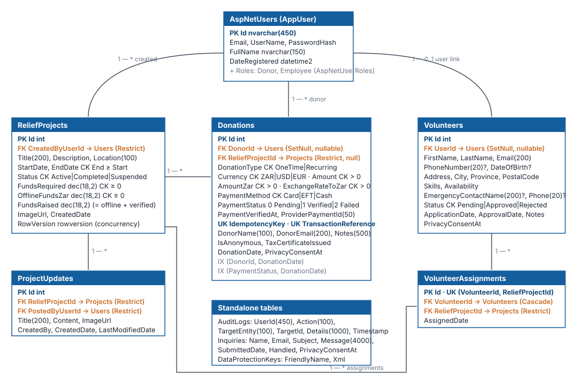

Database design, constraints, relationships, derived values and migration history for SQL Server / Azure SQL.
DocumentD-05
Version2.0
Date2026-11-02
StatusCurrent — at migration AuditRemediationNov2026
1. Overview
Engine: SQL Server 2022, Azure SQL, or LocalDB, through EF Core 10. Migrations are the source of truth; CI fails if the model and migrations differ.
Context:GiftOfTheGivers/Data/ApplicationDbContext.cs, which extends IdentityDbContext<AppUser> and implements IDataProtectionKeyContext.
Integrity strategy: constraints in the database (check, unique, foreign key) plus validation in the application. Money is decimal; time is UTC datetime2; concurrency uses rowversion.

Entity relationship diagram
2. Tables
2.1 ReliefProjects
Column
Type
Null
Rules
Id
int identity
No
PK
CreatedByUserId
nvarchar(450)
Yes
FK → AspNetUsers (Restrict)
Title
nvarchar(200)
No
Description
nvarchar(max)
No
Input limited to 2,000 characters
Location
nvarchar(100)
No
StartDate / EndDate
datetime2
No / Yes
CK_ReliefProject_Dates: EndDate is null or ≥ StartDate
Index (TargetEntity, TargetId) and Timestamp. Payment events use actor system:payfast
DataProtectionKeys
FriendlyName, Xml
ASP.NET Core key ring shared by all instances
AspNet*
Identity schema (key length 450)
Stores.MaxLengthForKeys = 0 keeps the runtime model matching this schema
3. Relationships and delete behaviour
Relationship
Cardinality
On delete
Reason
User → Donations
1 : * (optional)
SetNull
Deleting an account must not delete financial records
User → Volunteers
1 : 0..1 (optional)
SetNull
Same
User → Projects (creator), Updates (poster)
1 : *
Restrict
Keep authorship; deactivate staff instead of deleting
Project → Donations
1 : *
Restrict
Financial history must survive
Project → Updates, Assignments
1 : *
Restrict
Avoid multiple cascade paths in SQL Server
Volunteer → Assignments
1 : *
Cascade
Assignments have no meaning without the volunteer
4. Derived values and invariants
Invariant
Enforced by
FundsRaised = OfflineFundsZar + Σ(AmountZar where PaymentStatus = Verified)
DonationService (verification), offline-funds delta on edit, RecalculateFundsRaisedAsync, Funding Reconciliation page
A donation is counted once
Status check (Verified short-circuits) + rowversion retry
One donation per form submission
Unique IdempotencyKey, plus catch-and-return of the winning row
Certificate only for paid gifts
Query filter PaymentStatus = Verified in every certificate path
Staff changes are traceable
AuditService.Record staged in the same SaveChanges
5. Concurrency
ReliefProjects.RowVersion protects totals. Payment verification and recalculation retry up to three times on DbUpdateConcurrencyException. A project edit that conflicts shows "changed by someone else, reload". The EF SQL Server retry strategy (EnableRetryOnFailure) handles transient faults. No user-initiated transactions are used, so it is compatible.
Edited during remediation (F-21): the AlterColumn on RowVersion was removed because SQL Server cannot alter a rowversion column, so the migration failed on every empty database
20260924195240_P0Phase0CriticalFixes
Donor FK; raw-SQL check constraints
The raw constraints duplicated EF-managed ones (dropped in the remediation migration)
20260924200101_FixPendingModelChanges
Empty
Symptom of drift-chasing under the suppressed warning
Orphan file without a [Migration] attribute; never discovered by EF; deleted
20261102112731_AuditRemediationNov2026
AmountZar, ExchangeRateToZar, DonorName, PaymentVerifiedAt, ProviderPaymentId, PrivacyConsentAt (×3), OfflineFundsZar, nullable DOB/phone, sized audit columns + Details, DataProtectionKeys, new check constraints and index
Backfills rand values (ZAR exact; USD 18.50 and EUR 20.00 indicative), normalises PaymentMethod (PayPal → Card), sets PaymentVerifiedAt for verified rows, drops the duplicate constraints. Down re-creates them
Verification (2026-11-02, LocalDB): old chain applied to an empty database, legacy rows inserted (ZAR, USD with PayPal, EUR), upgrade applied, values checked, rolled back and re-applied, drift check clean. CI repeats the empty-database apply plus rollback/re-apply on SQL Server 2022 for every push.
7. Data lifecycle and privacy
Data
Retention (proposed, pending legal review)
Deletion path
Donations
5 years after the end of the tax year
Not deleted; anonymise donor fields on request after retention
Volunteers
2 years after last activity
Staff deletion (to be built, T-2.4)
Inquiries
1 year after handled
Scheduled purge (to be built, T-2.4)
Accounts
Until the user deletes them
Identity Delete personal data; donations keep SetNull links
Audit logs
5 years
Append-only
8. Seed data (Development only)
Roles Donor and Employee are created in every environment. In Development (or with Seed:DemoData=true): two demo accounts, six projects with offline funds, three volunteers (two approved, assigned to two projects), and three donations (two verified, one pending) so dashboards and reconciliation show both states.